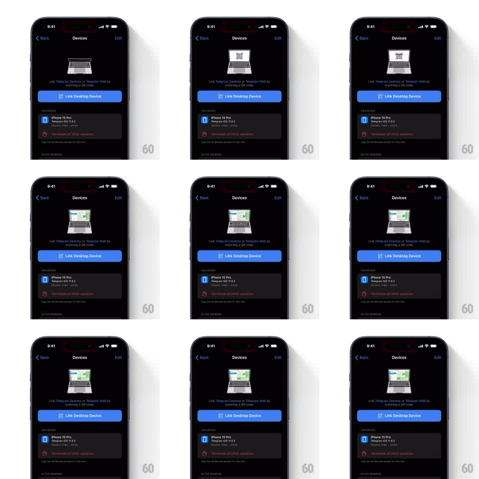

Media
Frame-by-frame

Rebuild this animation 1:1: Telegram's Devices screen header - a small laptop illustration whose screen loops from a QR code to a live chat interface, showing what linking a desktop device does.

Rebuild this animation 1:1: Telegram's Devices screen header - a small laptop illustration whose screen loops from a QR code to a live chat interface, showing what linking a desktop device does. ## Integration Integration: stack-agnostic spec - springs given as stiffness/damping, timed motions as duration + curve; map every value to your framework and animation library of choice. ## Scene Dark Devices settings screen. Header: a centered line-style laptop illustration. Its screen cycles: a QR code, then a Telegram desktop chat interface (sidebar list + conversation). Below: "Link Telegram Desktop or Telegram Web by scanning a QR code", a blue "Link Desktop Device" button, the "This Device" row (iPhone 15 Pro, Telegram iOS), and "Terminate all other sessions" in red. ## Motion spec Pattern: looping in-illustration screen transition. - The laptop idles with a soft float (+-3pt, 3s loop) and a faint shadow pulse in sync. - Every ~3s the laptop screen crossfades (400ms): QR code -> desktop chat UI -> back, with the QR's corner markers drawing in (stroke, 300ms) on each return. - During the chat phase, a message bubble slides up inside the tiny screen (rise 6pt + fade, 300ms) as if a message arrives. - The rest of the settings screen is static; the illustration is the only moving element. ## Calibration - The loop is calm and symmetrical - equal dwell on QR and chat states, identical crossfade both ways. - The laptop illustration stays line-art on dark; no photo realism. ## Reduced motion Screen states swap without crossfade; float disabled; bubble appears instantly. ## Don't miss - The chat UI inside the laptop mirrors real desktop Telegram: left list, right conversation. - The illustration never overlaps the title or button - it lives in its own header band.